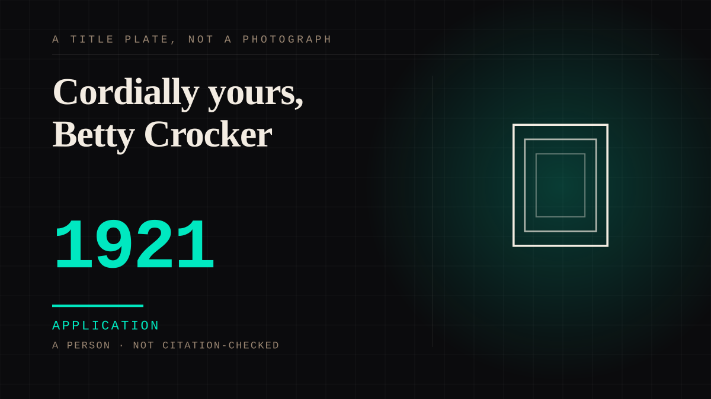

A person · 1921 · Marketing
Cordially yours, Betty Crocker
In 1921 a flour company's advertising department needed one woman's name for the kitchen advice its all-female home-service staff was already writing. Betty Crocker was a signature and a persona, not a person: she answered letters, then took a radio voice in 1924, and gave millions a correspondent who signed herself "Cordially yours."

The reply existed before the name did. In late October 1921 Gold Medal Flour ran a jigsaw-puzzle advertisement in The Saturday Evening Post; Washburn-Crosby received 30,000 completed puzzles and, with them, several hundred letters of cooking questions. The advertising department asked the board to create a personality that the women answering the letters could all sign, as the company's own account puts it. "Crocker" honoured a retired company director, William G. Crocker; "Betty" was chosen because it sounded friendly; employees competed to submit the signature and Florence Lindberg's was adopted, and is still in use. The replies, written by a home-service department of home economists, went out signed "Cordially Yours, Betty Crocker" - a real hand typing under a name no woman owned.
Then the persona was given a voice, which is what makes it a bond rather than a byline.
In 1924 the company helped a local radio station out of bankruptcy, renamed it WCCO, and put Betty Crocker on daytime radio's first cooking show, "the Betty Crocker Cooking School of the Air"; Blanche Ingersoll was its first voice, the program spread to thirteen regional stations, and from 1927 it ran on the fledgling NBC network for twenty-four years, with more than a million listeners enrolled. Each station had its own Betty Crocker reading the same scripts from Minneapolis, and letters - now from across the Midwest - kept arriving. General Mills' own description of the effect is this entry's best line: her voice on the air "was like the woman next door dropping in for a morning visit to share a new recipe."
This is the brand-as-character mechanism at its founding, decades before the corpus had a name for it. A corporation was given a face and a tone so that a customer relationship would have a subject, and the entry files it as an instance of that later mechanism with the practice dated to the year the signature was drawn. The tie is one-sided in the way that matters: the reader attached to a woman who did not exist, and the reply, however real the labour behind it, came from the persona rather than the person. The counter - that a home economist really did answer, so the bond was two-way - loses because the far end of the reader's attachment was Betty, and Betty could not answer as herself; the correspondence ran under a single invented name for exactly that purpose. Contestable, and recorded as such.
Application. One-sided attachment put to work on purpose. Creator economies, community, fandom as infrastructure, and the things that genuinely help people. Not automatically good - a tool with an obvious use is a tool that will also get a bad one.
Consideration. The part where somebody stops and thinks. The research, the diagnosis, the ethics, the lawsuits, the regulators. Roughly fifty years of arguing with itself about whether this is a relationship.
Where it sits
1900 1900-1949 · 1921 1949
Provenance · 5 source record(s)
- unverifiedThe origin as the company's account gives it: the late-October 1921 Saturday Evening Post Gold Medal Flour jigsaw-puzzle advertisement; 30,000 completed puzzles arriving with several hundred letters of cooking questions; the Advertising Department persuading the board to create a personality the women answering the letters could all use; the surname Crocker chosen for the retired executive William G. Crocker and Betty for its friendly sound; Florence Lindberg's signature chosen in an internal contest and still in use; and the home economists who tested and demonstrated the flour. Read through a search index rather than fetched, so the record is unverified: a reader can open this page, this agent did not.General Mills, "How Betty Crocker got its start" (2024) ↗
- unverifiedThe people behind the persona: Ruth Hayes Carpenter hired in 1921 to create the Home Service Department and a team of 25 home economists; Blanche Ingersoll developing the first radio scripts and becoming, in early October 1924, the first voice of Betty Crocker; the doubt that women would listen to a radio program and the letters that quickly came in instead; and the description of the voice as "like the woman next door dropping in for a morning visit to share a new recipe." Read through a search index rather than fetched, so the record is unverified: a reader can open this page, this agent did not.General Mills, "The women who built Betty Crocker" (2022) ↗
- unverifiedThat Betty Crocker began in the advertising department of Washburn-Crosby after the October 1921 contest; that Samuel Gale invented the persona because the advice should come from a woman; that the all-female home service department answered consumer questions signing each letter "Cordially Yours, Betty Crocker"; and that Marjorie Child Husted drove the persona and wrote its radio scripts. Read through a search index rather than fetched, so the record is unverified: a reader can open this page, this agent did not.MNopedia (Minnesota Historical Society), "Betty Crocker" ↗
- unverifiedThat Betty Crocker is a brand and fictional character created by the Washburn-Crosby Company in 1921 "to give a personalized response to consumer product questions"; the Gold Medal Flour promotion in the Saturday Evening Post and the 30,000 puzzles and letters that produced the persona; and that the persona was made because housewives would want advice from a fellow woman. Read through a search index rather than fetched, so the record is unverified: a reader can open this page, this agent did not.Wikipedia, "Betty Crocker" ↗
- unverifiedThat Betty Crocker began as a signature in an all-male advertising department needing a trustworthy spokeswoman; that the autograph was a composite of handwriting samples from the women at Washburn-Crosby; the 1924 radio debut of the "Betty Crocker Cooking School of the Air"; and Laura Shapiro's reading of Marjorie Child Husted's Betty as "the home-economist-in-chief." Read through a search index rather than fetched, so the record is unverified: a reader can open this page, this agent did not.JSTOR Daily, "In Search of the Real Betty Crocker" (29 June 2017) ↗
Connected · 3 out, 0 in
It sits in
The full timeline → · The database → · See it in the atlas →